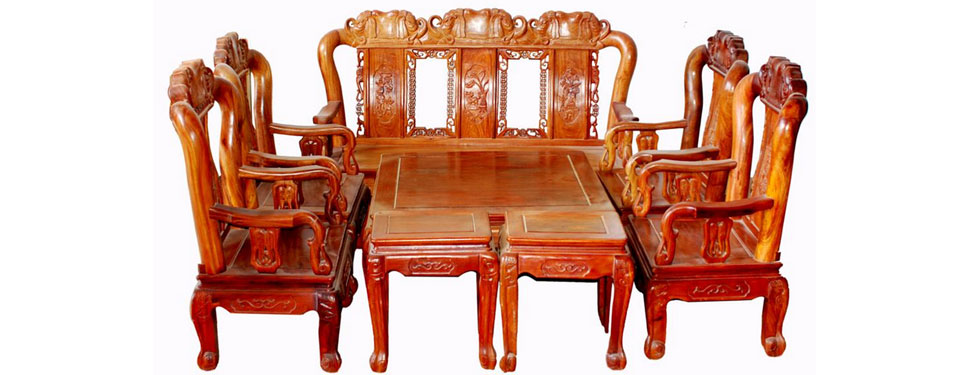
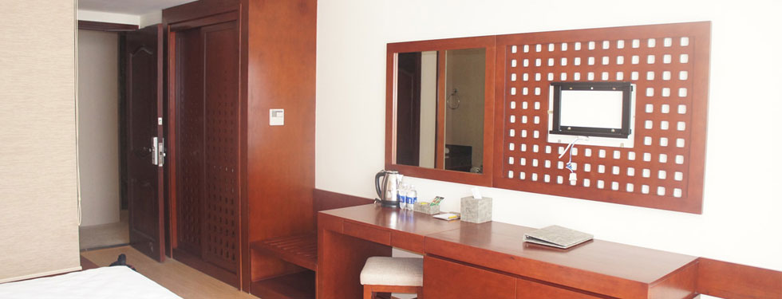
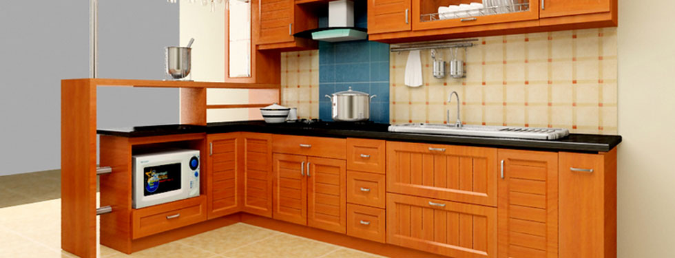
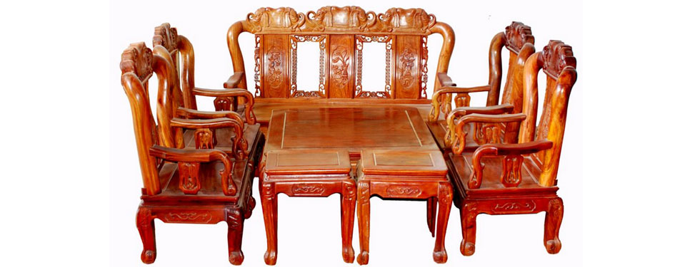
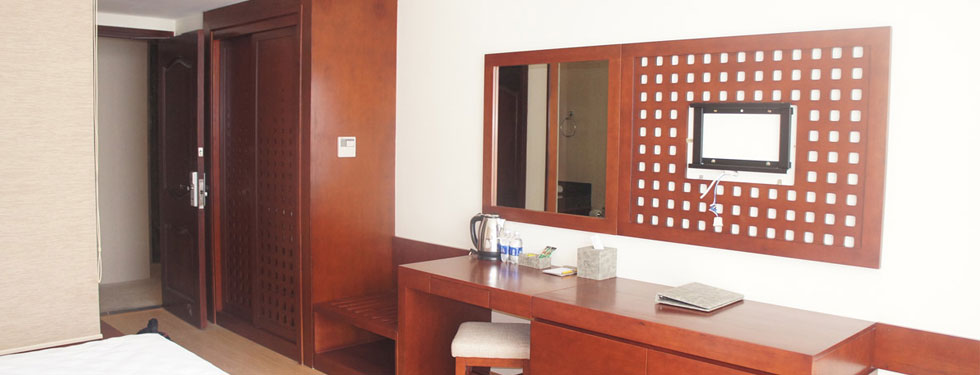
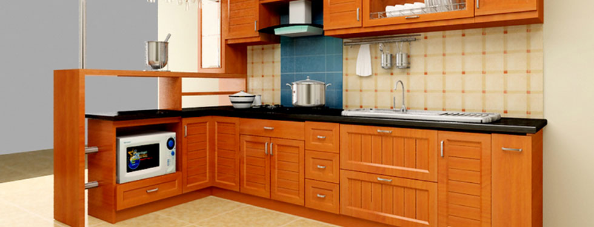

  
  Danh mục sản phẩm


Chi tiết tin tức
Những thực phẩm nên tránh khi đang uống kháng sinh
06/05/2013
Khi đang uống kháng sinh điều trị một chứng bệnh nào đó, bạn nên tránh ăn những thực phẩm dưới đây:
Sữa và các sản phẩm chế biến từ sữa
Sữa và các sản phẩm chế biến từ sữa có thể làm nặng nề thêm cho đường ruột của bạn trong khi bạn đang dùng thuốc kháng sinh. Hầu hết các dược sĩ đều đặc biệt khuyến cáo không uống sữa khi đang uống thuốc kháng sinh ciprofloxacin.
Ngoài ra, các sản phẩm chứa nhiều chất béo khác cũng có thể làm trầm trọng thêm các triệu chứng của bệnh tiêu chảy - một tác dụng phụ khi uống thuốc kháng sinh.
Thực phẩm chứa nhiều chất xơ
Một số loại rau quả có chứa nhiều chất xơ hoặc các loại đậu cũng có thể gây tiêu chảy nặng thêm khi bạn đang dùng thuốc kháng sinh.
Bên cạnh đó, các thực phẩm như ngũ cốc, lúa mì tuy có thể tăng cường chất sắt và calci cho cơ thể nhưng lại cản trở khả năng hấp thụ một số thuốc kháng sinh khi vào cơ thể, đặc biệt là khi bạn đang uống thuốc kháng sinh quinolone, trong đó bao gồm các loại thuốc như ciprofloxacin, acid nalidixic và cinoxacin, sparfloxacin và trovafloxacin.
Thực phẩm có tính acid
Hàm lượng acid trong một số thực phẩm nhất định có thể làm gián đoạn khả năng hấp thụ thuốc của cơ thể.
Nói chung, khi uống thuốc kháng sinh, tuy bạn không luôn luôn phải tránh xa chúng hoàn toàn, nhưng đôi khi việc tiêu thụ thực phẩm chua hoặc đồ uống có chứa nhiều acid như cà chua, nước trái cây, đồ uống có ga cũng có thể hạn chế sự hấp thu của thuốc khi vào cơ thể.
Rượu
Nhiều dược sĩ đều chỉ ra rằng rượu không can thiệp bất lợi trực tiếp vào việc uống thuốc kháng sinh. Tuy nhiên, thuốc kháng sinh và rượu có thể có tác dụng phụ tương tự nhau. Vì thế, nếu bạn uống cả hai cùng một lúc, chúng có thể gia tăng cơ hội bạn phải chịu trận với những nguy cơ buồn nôn, chóng mặt hoặc buồn ngủ...
Những loại thuốc này có thể điểm mặt bao gồm: penicillin G, ampicillin, floxin, oxacillin, gentamycin và ciprofloxacin. Khi uống những loại thuốc này, bạn có thể phải ăn/uống các thực phẩm 3 giờ trước/sau khi uống thuốc.
Lưu ý: Tránh dùng các loại sữa, các sản phẩm chế biến từ sữa, trừ sữa chua, khi bạn đang uống thuốc kháng sinh. Nguyên nhân là do lượng calci có nhiều trong sữa và các sản phẩm từ sữa có thể cản trở sự hấp thu của thuốc kháng sinh. Tuy nhiên, sữa chua thì bạn vẫn có thể ăn bình thường vì nó có chứa nhiều men vi sinh giúp khôi phục lại sự cân bằng cho đường ruột, tránh tiêu chảy khi sử dụng thuốc kháng sinh.

Tin bài khác
- Đà Nẵng sẽ báo cáo Bộ Chính trị vụ 'thất thu hơn 3.400 tỷ' (Ngày đăng 10/03/2013 8:45)
- CSGT bụng phệ không được ra đường (Ngày đăng 10/03/2013 8:45)
- 300 cây xanh ở Hà Nội bị 'bức tử' (Ngày đăng 10/03/2013 8:45)
- TP HCM và Hà Nội tiếp tục nghiên cứu đổi giờ làm (05/03)
- 'Các nước đều mong muốn hợp tác với hải quân Việt Nam' (05/03)
- 'Không thể thần thoại hóa rùa hồ Gươm để tôn là bảo vật' (05/03)
- Đội phó CSGT đi xe Camry biển giả (05/03)
- Thanh niên trốn viện, nhảy cầu tự tử (05/03)
- 'Sáp nhập một số trường đại học để tránh manh mún' (05/03)
-

-
-
-
Tên sản phẩm
Tủ Bếp Gỗ CN
Tủ Bếp Gỗ Tự Nhiên
Bàn ăn

Tổ 4, ấp 2, Xã Xuân Hưng, Huyện Xuân Lộc, ĐN
Điện thoại: 0977102008 0933525108
Web: dogotanlanh.com
Email: dogotanlanh@gmail.com
Copyright © 2013 by Dogotanlanh. All rights reserved
Thiết kế website bởi